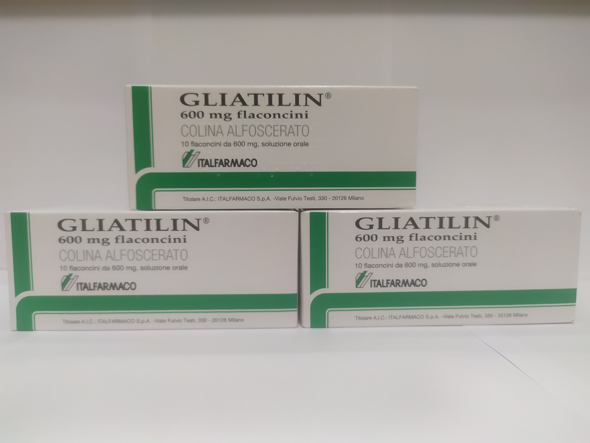

Контактная информация:
Цена: 1300 грн/уп.
В наличии
Производитель: Италия
Цена: 1300 грн/уп.
В наличии
Именно в FarmItal вы можете купить Глиателин,Gliatilin в Украине, Гарантированно Качественный!
Доставка Gliatilin осуществляется транспортными компаниями, сроки выполнения заказа оговариваются менеджером Фармитал. Вы можете заказать Глиателин Флаконы в городах: Одесса, Херсон, Чернигов, Северодонецк, Бердянск, Бровары, Днепр, Винница, Киев, Славянск, Полтава, Краматорск, Белая Церковь, Каменское, Мариуполь, Черновцы, Александрия, Каменец -Подольский, Львов, Запорожье, Кропивницкий, Житомир, Ивано-Франковск, Сумы, Черкассы, Константиновка, Мелитополь, Кривой Рог, Ровно, Луцк, Никополь, Павлоград, Ужгород, Кременчуг, Лисичанск, Хмельницкий, Тернополь, Харьков, Николаев, а также в других населённых пунктах Украины.
Улучшает передачу нервных импульсов в холинергических нейронах; положительно влияет на пластичность нейрональных мембран и функцию рецепторов. Улучшает церебральный кровоток, усиливает метаболические процессы в мозге, активирует структуры ретикулярной формации головного мозга и восстанавливает сознание при травматическом поражении головного мозга. Оказывает профилактическое и корректирующее действие на такие патогенетические факторы инволюционного психоорганического синдрома, как изменение фосфолипидного состава мембран нейронов и снижение холинергической активности.
Экспериментальные исследования показали, что глиатилин стимулирует дозозависимое выделение ацетилхолина в физиологических условиях нейротрансмиссии. При попадании в организм расщепляется под влиянием ферментов на холин и глицерофосфат. Глиатилин, с одной стороны, являясь донором холина, увеличивает синтез ацетилхолина и положительно влияет на нейротрансмиссию, с другой - глицерофосфат участвует в синтезе фосфатидилхолина (мембранного фосфолипида), в результате и то и другое оказывает положительное влияние на мембрану. улучшает синаптическую трансмиссию. Таким образом, фармакодинамические исследования показали, что глиатилин действует на синаптическую, в т.ч. холинергическую нейротрансмиссию; пластичность нейронной мембраны; функцию рецепторов
Хранить в сухом, недоступном для детей месте при температуре не выше 25°С.